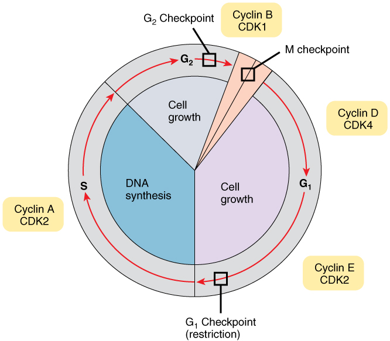
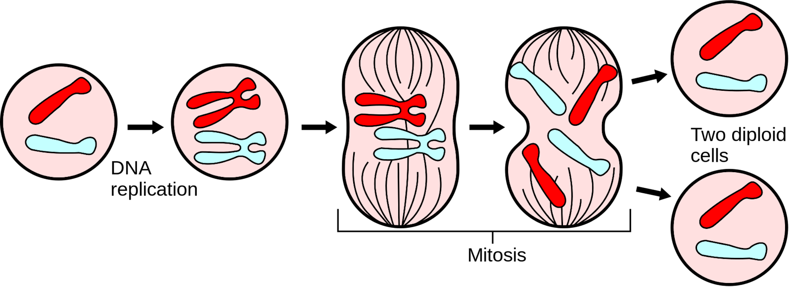
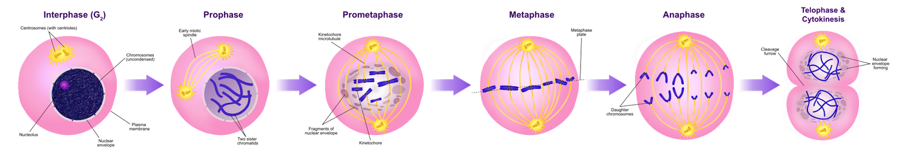
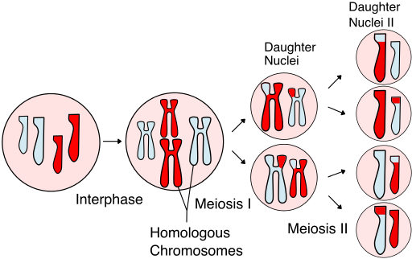
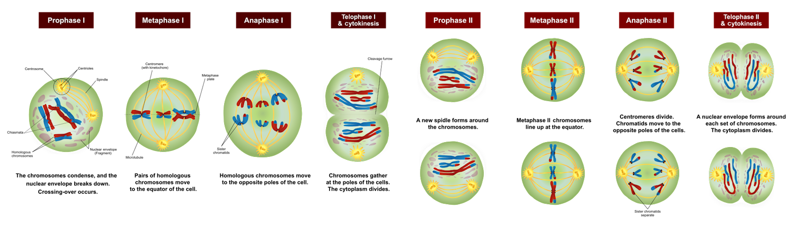

Funcția autocatalitică. Ciclul celular
Materialul genetic are 2 funcții importante:
funcția autocatalitică reprezentată de capacitatea de replicare a ADN-ului
funcția heterocatalitică reprezentată de sinteza proteică pe baza informației genetice stocată de ADN
Funcția autocatalitică. Ciclul celular
ADN-ul se replică după modelul semiconservativ, adică noua moleculă de ADN va conține o catenă a vechei molecule de ADN, catena care a servit drept ,,matriță” și o catenă nou formată, prin dispunerea complementară a bazelor după modelul catenei matrițe. Această replicare a ADN-ului este o parte importantă a ciclului celular, prin care celula se pregătește pentru diviziune. Ea își dublează cantitatea de material genetic pentru ca, mai apoi, aceasta să se împartă în mod egal la cele 2 celule fiice ce se formează după modelul celulei mamă.
Etapele ciclului celular
Ciclul celular reprezintă de fapt viața celulei, din momentul ,,nașterii” sale până la reproducerea sau diviziunea sa în 2 celule fiică. Ciclul celular durează la om în medie 24 de ore și este compus din 2 faze:
Interfaza (inter-=între) reprezintă faza de creștere prin care celula se pregătește pentru diviziune.
interfaza când celula se pregătește pentru diviziunea celulară
mitoza ce reprezintă diviziunea celulară, când nucleul și citoplasma se divid și astfel, dintr-o celulă se formează 2 celule fiice identice cu ,,celula mamă”
Interfaza (inter-=între) reprezintă faza de creștere prin care celula se pregătește pentru diviziune.
G1= faza gap 1 (gol 1). Reprezintă faza de creștere celulară și de pregătire pentru replicare. Ea crește în dimensiuni, își copiază organelele și ăși pregătește structurile moleculare de care va avea nevoie. Are durată variabilă, putând dura ore sau zile, depinde de tipul de celulă.
S= faza de sinteză, în care celula își dublează cantitatea de ADN prin replicare după modelul semiconservativ. Durează între 8 și 10 ore.
G2= faza gap 2 (gol 2). În această fază, celula își continuă creșterea și se pregătește pentru a intra în diviziunea celulară. Durează aproximativ 5 ore.
G0= faza de repaus, în care se găsesc celulele care nu se mai divid temporar sau permanent (celula nervoasă este permanent în faza G0, pentru că neuronii nu se divid).

© Photo by OpenStax/ Schema ciclului celular
2. Mitoza reprezintă diviziunea celulară ecvațională, faza în care celula mamă își divide nucleul și citoplasma în jumătate, formând 2 celule fiice identice și cu aceiași cantitate de ADN ca celula mamă (2n=celulă diploidă). Constă din 2 procese: mitoza propriu-zisă, etapă în care are loc diviziunea nucleară și citokinesis, etapă în care are loc diviziunea citoplasmei.

© Photo by Mysid / Public Domain/ Schema mitozei
{kind=link}
a) Mitoza propriu-zisă
Prin mitoză au loc creșterea și dezvoltarea organismului, înlocuirea celulelor îmbătrânite și procesele de reparare ale organismului. Este tipul de diviziune a celulelor somatice ale organismului.În cadrul mitozei, materialul genetic celular, ADN-ul, se organizează sub forma cromozomilor vizibili la microscop și se distribuie în mod egal în 2 nuclee separate cu ajutorul fusului de diviziune, o structură specializată. Are 4 faze:
profaza. Materialul genetic dispus sub formă de cromatină se spiralează și condensează sub formă de cromozomi vizibili la microscop. Nucleolul dispare, iar membrana nucleară se dezintegrează. Tot în această fază se formează și fusul de diviziune (fusul mitotic) amintit mai sus, cu un rol foarte important în diviziune. El este alcătuit din 2 centrozomi, care încep să migreze spre 2 poli opuși ai celulei. Între cei 2 centrozomi se dispun microtubuli, care sunt structuri alungite sub formă de degete de mănușă. De acești microtubuli, mai exact de proteinele atașate microtubulilor numite kinetochori, se vor atașa cromozomii. Cromozomii încep să migreze spre centrul fusului de diviziune. Uneori această etapă mai poartă numele de prometafază.
metafaza. Cromozomii se atașează de kinetochorii microtubulilor și se dispun la mijlocul distanței dintre cei 2 centrozomi, formând placa metafazică. Cromozomii sunt formați din 2 cromatide surori, adică sunt bicromatidici.
anafaza. În timpul acestei faze, cromatidele surori se scintează, adică se despart, iar cromozomii devin din bicromatidici, unicromatidici. Kinetochorii atrag cromozomii unicromatidici spre cei 2 poli opuși ai celulei, iar microtubulii încep să se dezintegreze. Astfel, se asigură că fiecare viitoare celulă va primi o parte din fiecare pereche de cromatide surori, conținând material genetic identic.
telofaza. Ultima fază a mitozei, în care are loc formarea a 2 nuclee separate, fiecare conținând materialul său genetic. ADN-ul se despiralează și se dispune din nou sub formă de cromatină, fusul de diviziune se dezintegrează, iar celula se pregătește pentru citokinesis.
b) Citokinesis are loc diviziunea citoplasmatică a celulei. Un inel fibros format din actină se dispune la mijlocul celulei, iar prin contracție divide citoplasma între cele 2 celule fiică nou-formate. De obicei, una dintre celule își continuă diviziunea în timp ce cealaltă intră în faza G0 și devine celulă funcțională. Citokinesis este o etapă foarte importantă a ciclului celular, fără ea, celula devine multinucleată, acest obicei fiind întâlnit și la celulele canceroase.

© Photo by Ali Zifan / CC BY-SA 4.0/ Etapele mitozei Legendă: 1. Interfaza; 2. Profaza; 3. Prometafaza; 4. Metafaza; 5. Anafaza; 6. Telofaza și citokinesis
{kind=link}
De altfel, în cazul celulelor canceroase, are loc o dereglare a ciclului celular normal. În cancer au loc mutații și aberații ale materialului genetic normal. Ciclul celular este controlat de gene numite proto-oncogene și gene supresoare tumorale, care intervin prin producerea unor proteine specifice care controlează diversele etape ale ciclului celular. Dacă o celulă este alterată sau modificată, aceste proteine dau semnale specifice celulei și o obligă fie să își oprească diviziunea fie să intre în apoptoză, adică să moară. Orice alterare a acestor gene modifică proteinele și interferă cu evoluția normală a ciclului celular. Astfel aceste proteine vor accelera sau nu vor mai putea opri dezvoltarea celulară anormală, rezultând multiplicare accelerată a celulei canceroase.
Meioza (diviziunea reducțională)
Spre deosebire de mitoză, care are loc în celule somatice ale corpului, meioza este diviziunea celulară care are loc la nivelul celulelor reproducătoare. Rolul este de a produce celule sexuate, numite gameți, reprezentați la sexul masculin de spermatozoizi, iar la sexul feminin de ovule. Prin meioză, materialul genetic se divide în părți egale între celule. La sfârșitul meiozei rezultă 4 celule fiice, iar fiecare va conține doar jumătate din materialul genetic al celulei mamă (n=celulă haploidă). Prin fecundarea ovulului de către spermatozoid are loc reîntregirea materialului genetic (2n=celulă diploidă), celula ou nou formată având jumătate din materialul genetic al mamei (matern) și jumătate din materialul genetic al tatălui (patern).Înainte de diviziune, celula prezintă același etape ale interfazei (G1, S și G2) ca celula somatică.

© Photo by Rdbickel / CC BY-SA 4.0 / Schema meiozei
{kind=link}
Etapele meiozei
Etapa reducțională sau meioza I
- Materialul genetic al celulei mamă se divide în 2 către 2 celule fiice ce vor avea doar jumătate din cantitatea de ADN a mamei (celule haploide). Etapele sunt aceleași ca în cadrul mitozei cu câteva deosebiri:
în cadrul profazei I are loc dezintegrarea membranei nucleare, dispariția nucleolului și organizarea fusului de diviziune. Materialul genetic se spiralizează și condensează sub formă de cromozomi, la fel ca la mitoză, cu diferența că cromozomii omologi (identici) se vor grupa și vor forma bivalențe. Totodată, va avea loc un schimb de informație genetică, crossing-over, între cei 2 cromozomi omologi, astfel încât anumite gene vor trece de pe o cromatidă pe cealaltă.
în metafază I, cromozomii omologi se vor dispune la centrul fusului de diviziune, formând placa metafazică. Fiecare cromozom omolog se va dispune de o parte a fusului de diviziune, aleator, astfel ca mai apoi, fiecare cromozom va migra către un pol al fusului.
anafaza I. Cromozomii omologi vor migra către polii celulari. Astfel, dacă în cadrul mitozei, cromozomii sunt monocromatidici, în acest caz cromozomii vor fi bicromatidici.
telofaza I. Cromozomii bicromatidic au ajuns la nivelul polului celular. Are loc formarea celor 2 nuclee, despiralizarea materialului genetic sub formă de cromatină.
Citokinesis-ul se desfășoară identic ca la mitoză cu deoseibirea că celulele fiică vor fi aploide, adică cu jumătate din materialul genetic al mamei.
2. Etapa ecvațională sau meioza II
- După etapa reducțională, cele 2 celule fiice haploide vor intra în diviziune mitotică. Etapele sunt cele descrise la mitoză. Diferența constă în faptul că nu mai are loc duplicarea materialului genetic din cadrul fazei S a interfazei. Deci, celulele vor sări peste etapa interfazei și vor intra din meioza I direct în meioza II. Astfel, cromozomii omologi bicromatidici devin monocromatidici și se împart între alte 2 celule fiică cu cantitatea de material genetic identică cu a celulei mamă, în cazul de față, n

© Photo by Ali Zifan / CC BY-SA 4.0 / Etapele meiozei Legendă: 1: Profază I; 2: Metafază I; 3: Anafază I; 4: Telofază I și Citokinesis; 5: Profază II; 6: Metafază II; 7: Anafază II; 8: Telofază II și Citokinesis
{kind=link}
- În final rezultă 4 celule haploide, numite gameți. Gameții produși în urma meiozei nu sunt identici, datorită fenomenului de crossing-over din profaza I și a dispunerii aleatorii a cromozomilor omologi din metafaza I. Prin aceste procese se asigură marea variabilitate genetică a organismelor. La om, doar orientarea aleatorie a gameților omologi dă naștere la 8 milioane de tipuri de posibili gameți!!!